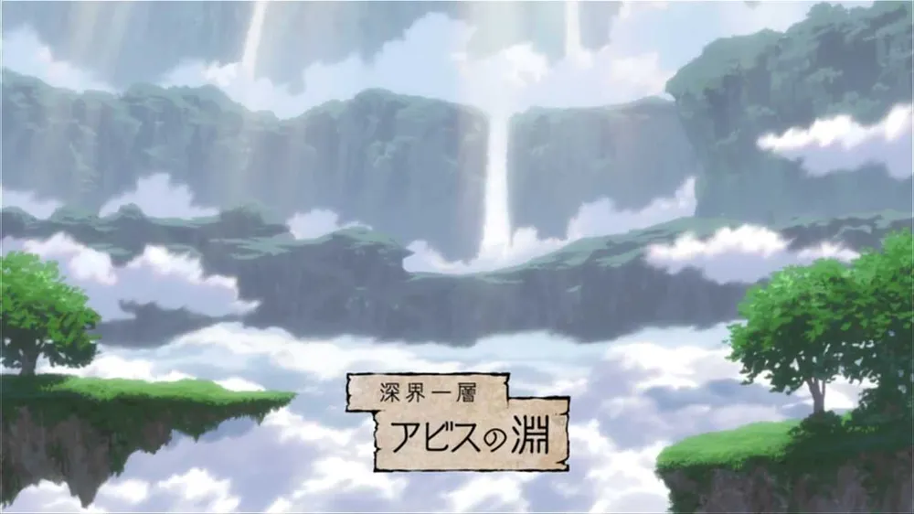
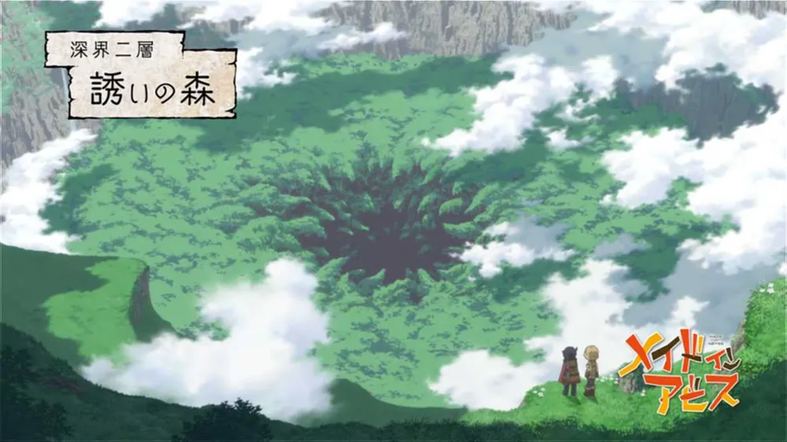
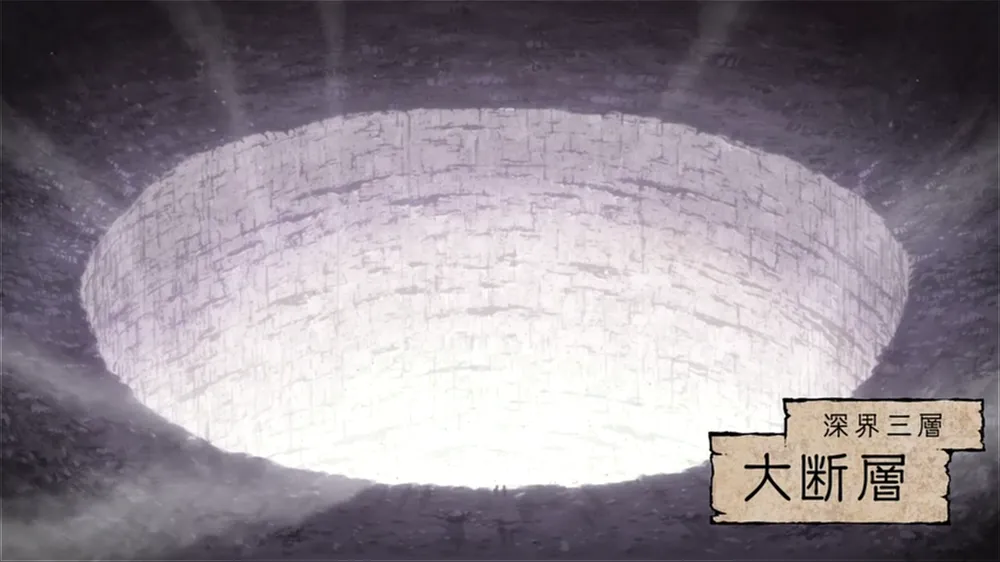

1층 전체가 붉은 호각들의 활동 구역이라고는 하지만 암묵의 룰에 의해 550m까지로 제한하고 있다.
1층이라고 얕볼 수도 없는 게, 사람을 우습게 보는 위험한 괴물들도 곳곳에 있고 리코가 레그를 발견하기 전에
죽을뻔한 걸 보면 가끔 2층에서 강한 녀석들이 올라오기도 하는 것 같다.580m까지는 마을에 설치된 폭포의 수력으로
가동하는 곤돌라(엘리베이터)를 타고 단숨에 오르내릴 수 있다
좀더 자세한 이미지는 여기서 확인해보자
⬑어비스의 연못

푸른 호각부터 들어갈 수 있는 곳으로, 본격적으로 사람 잡는 괴이들이 득시글한 마경이다.
붉은 호각이 여기 들어가면 자살로 취급하여 구조하지 않는다.
설령 살아서 여기까지 내려간다 해도 살아서 되돌아올 가능성이 극히 낮기 때문.
상승기류가 세고 비행형 맹수가 많으며, 과거 외국의 탐험가가 비행선을 타고어비스에 내려가려다가 이곳에서 잡아먹히는 사고가 있었다.
그래서인지 이 작품에선 낙하산, 기구, 비행선 등을 타고 내려가지 않는다.전보선이라는 기구로 물건을 올려보내기만 할 뿐이다.
이 층에서는 아래에서 생성된 짙은 안개가 상승기류를 타고 올라오면서 '거꾸로 폭포'가 형성되고 있다.
좀더 자세한 이미지는 여기서 확인해보자
⬑유혹의 숲

3층의 상승 부하는 2층의 부하에 더해 평형감각 이상과 환각 또는 환청. 3층까지는 신체에 직접적인 손상이 가해지진 않는다.
또한 부하가 전 층의 부하와 중복되는 특이한 층. 푸른 호각들이 내려갈수 있는 한계 깊이다.
4000m가 넘는 수직 암벽으로 구성된 원통형 지형이라 등반해 내려가기 매우 위험하다.
중심의 빈 공간에는 사나운 비행 맹수들이 날아다니며 벽 쪽에서 튀어나오는 먹잇감을 호시탐탐 노린다.
리코와 레그는 몸집이 작다는 장점을 살려 네리탄탄이 서식하는 벽속 터널형 식물을 통과해 내려갔고,
이 방식으로 금방 내려갔기 때문에 작중 비중은 한 화 분량도 안되는 곳이었다.
하지만 애니판에서 원작자 검수 오리지널 분량을 좀 더 추가하며 한 에피소드를 소비하였다.
어른들은 어떻게 내려가는지 참 궁금해지는 층이기도 하다. 여담으로 레그가 본도르드와의 싸움에서 어느 정도지만
몸의 사용법을 떠올려 자유롭게 벽을 오르는 모습을 보여주면서 이전의 레그가 이곳을 어떻게 올라왔는지 간접적으로 알려줬다.
마르르크와 그의 아버지가 비행선을 사용하여 이 곳까지 내려왔다.
좀더 자세한 이미지는 여기서 확인해보자
⬑대단층